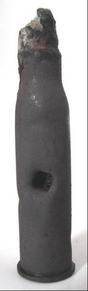

W dniu 26 września 2009r. na szczycie Kopystanki odbyła się z udziałem 90 uczestników rajdu zorganizowanego przez Klub Górski PTTK "Karpaty" w Przemyślu uroczystość odsłonięcia tablicy upamiętniającej 100-lecie zorganizowanej turystyki w Przemyślu.
O tym fakcie przeczytać można na stronie internetowej klubu - klubkarpaty.pl.
28 listopada 2009Wiadomość ta winna trafić do kategorii "Ciekawostki", ale skoro jej nie ma na naszej stronie, więc podajemy ją tutaj.
Pisarz rosyjski Włodzimierz Bielajew, autor trylogii "СТАРAЯ КРЕПОСТЬ"* pozytywnie oceniając mieszkańców Galicji ustami jednego z bohaterów, wspomina pewne zdarzenie, jakie miało miejsce w Kopysnie cyt.: "Kiedy Przemyśl dostał się do niewoli, zostałem ciężko ranny i tam, w Galicji ... zostałem leżąc na ziemi, nieprzytomny. (...) Leżałem ponad rok w chłopskiej chacie w wiosce Kopysno. Przywieźli mi potajemnie z Przemyśla lekarza. Operował mnie dwa razy. (...)." Czy opisane zdarzenie rzeczywiście miało miejsce, czy jest to tylko wymysł autora, tego nie wiemy.
* na podstawie tej książki (nagrodzonej w 1951 r. nagrodą Stalina), w 1973 r. nakręcono serial telewizyjny pod tym samym tytułem.
Odwiedziliśmy Kopysno, które o dziwo, u naszych drogowców nadal figuruje pod nieaktualną nazwą z czasów PRL, tj. lat 1977-1981. Zobaczcie sami drogowskaz ustawiony w Rybotyczach.
A oto inne ciekawe fotografie zrobione w drodze na Kopystankę:
Wygrzewająca się w słońcu młoda żmija zygzakowata
Młode dziki, które uciekły z zagrody
W koleinie drogi prowadzącej na szczyt Kopystanki znaleźliśmy uszkodzony nabój. Po wyczyszczeniu i odczytaniu napisów okazało się, iż jest on produkcji austro-węgierskiej a został wyprodukowany w styczniu 1910 r. przez Georga Rotha z Wiednia.

Będąc na szczycie Kopystanki mogliśmy zobaczyć coś, czego do niedawna nie było na horyzoncie - wiatraki z farmy w Orzechowcach.
Kto w najbliższym czasie wybiera się na Kopysno przez Rybotycze, radzimy iść pieszo lub jechać samochodem terenowym, gdyż droga w kilku miejscach jest w fatalnym stanie. Można rozerwać oponę, zniszczyć podwozie itp. Warto ze sobą wziąć łopatę.
18 kwietnia 2009